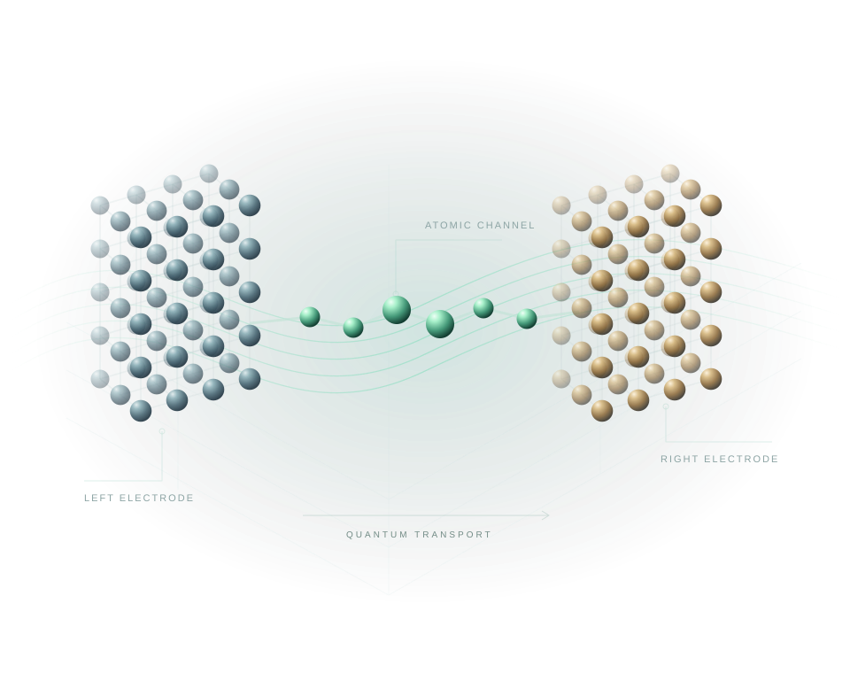

原子级器件建模
定义电极、中心区、沟道与边界，在三维工作空间中组织器件结构。
ATOMISTIC INSIGHT. DEVICE IMPACT.
基于平面波与瓦尼尔基的量子输运仿真平台。连接微观电子结构与电学响应，探索半导体器件的性能边界。

原子尺度输运 · 概念示意01 / MEET ATOMTRANS
一部短片，了解从器件建模到输运分析的完整研究体验。
视频暂时无法播放。请使用下方下载链接打开本地 MP4 文件。
02 / SIMULATION PLATFORM
在统一的科学工作空间中构建器件、定义电极与沟道、监控计算，并对比输运结果。让每一步分析都回到真实的原子结构。
从材料与原子结构出发，描述体系的电子结构。
通过瓦尼尔化构建局域表示，连接电子结构与输运计算。
在开放边界下分析量子输运，获得透射与电流响应。
03 / SOFTWARE FEATURES
从分子结、纳米线到二维半导体，将材料、接触与器件行为放在同一研究视野中。
定义电极、中心区、沟道与边界，在三维工作空间中组织器件结构。
设置栅极和介电区域，结合电流与透射分析器件的电学响应。
探索自旋分辨的电子输运，以及超导体系中的输运行为。
从声子到热电响应，拓展对器件能量传输的理解。
通过半经典输运工作流，研究与能带相关的材料输运性质。
以机器学习哈密顿量工作流，拓展原子尺度输运的研究范围。
04 / RESEARCH EXAMPLE
透射谱、局域态密度与电流曲线，提供观察微观机制的不同视角。
MOLECULAR JUNCTION
在 Au–BDT–Au 分子结中，结合透射谱与 I–V 曲线，考察接触、电子态与器件输运之间的联系。
以上为 AtomTrans 真实计算案例；具体结果对应各自的结构与计算设置。
ATOMTRANS